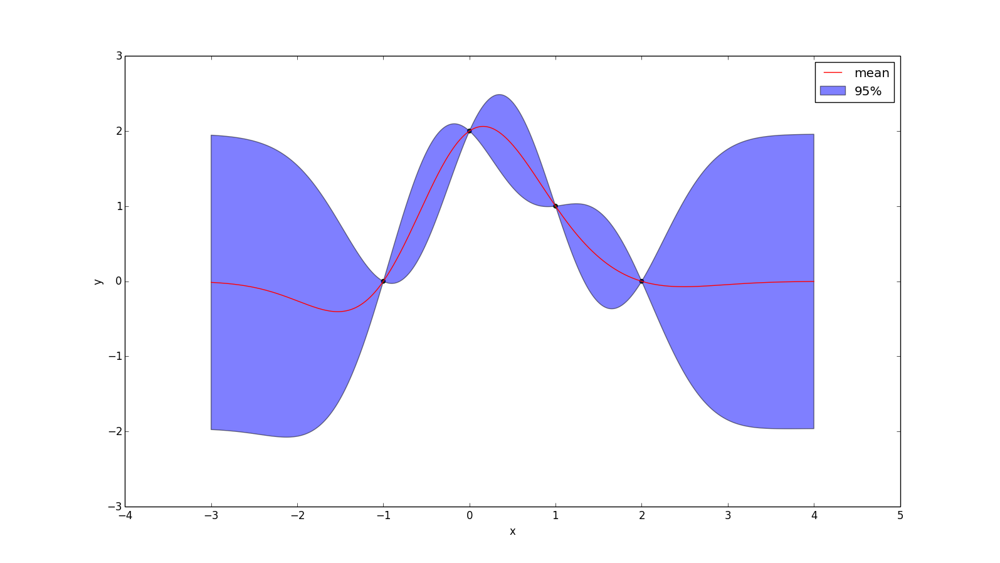
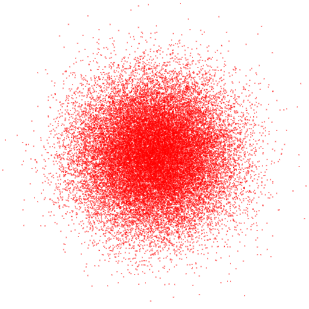
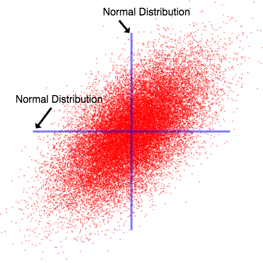
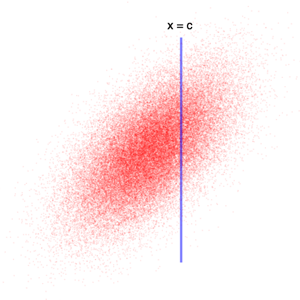
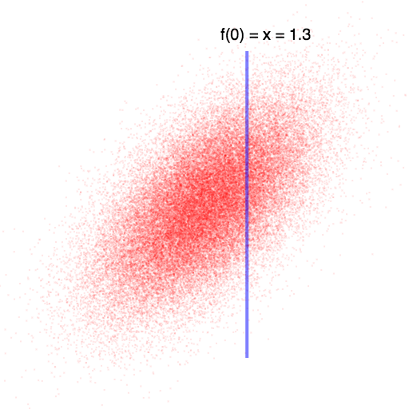
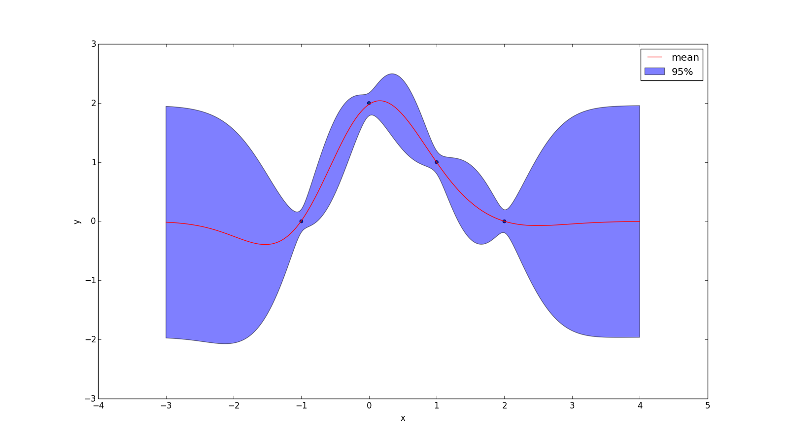
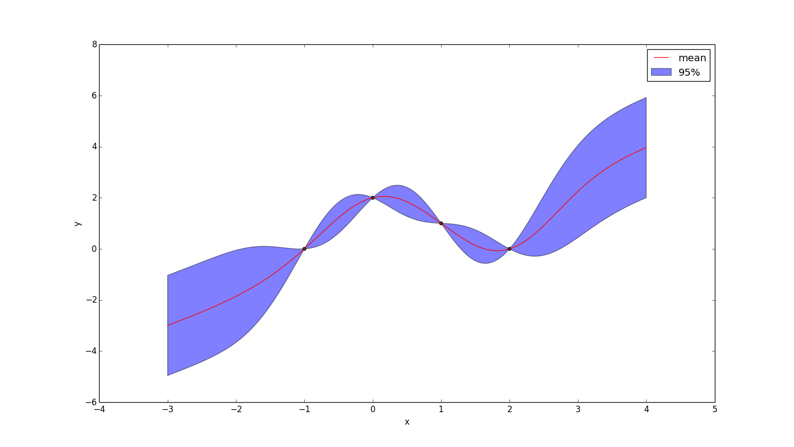
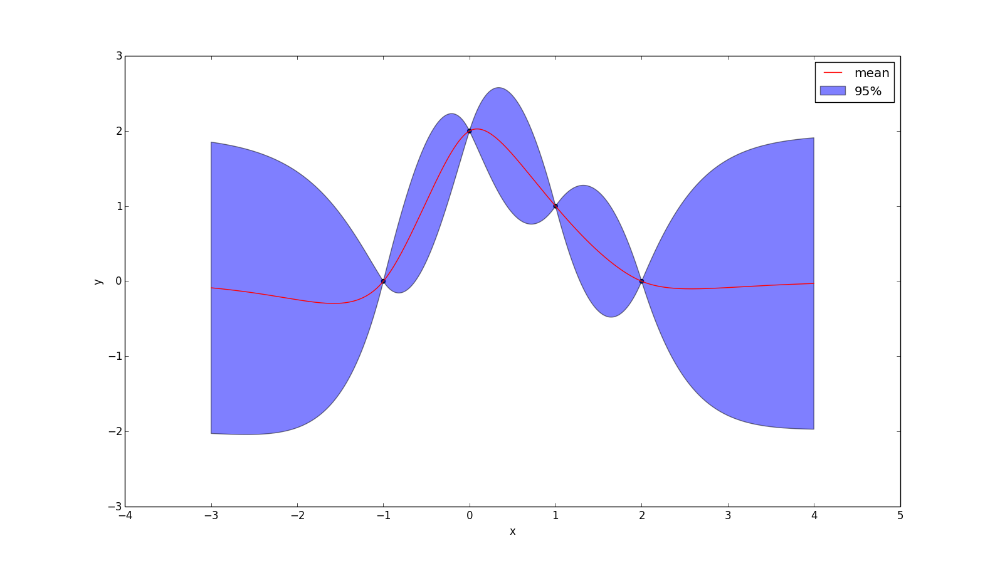
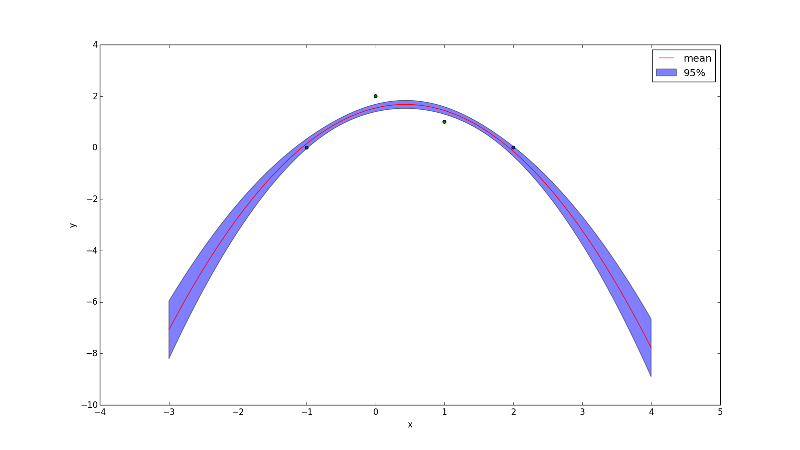
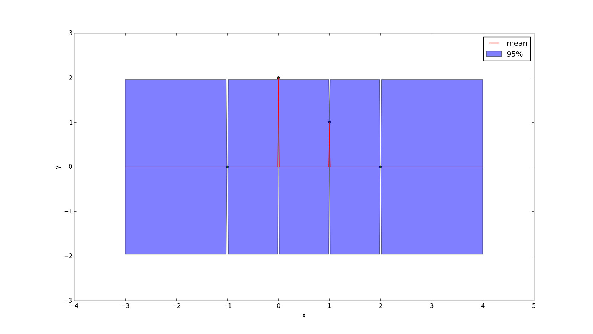

Gaussian Processes
Def: A Gaussian Process is a collection of random variables, any finite number of which have a joint Gaussian distributionThis article will focus on Gaussian process that map one input dimension to one output dimension, though the extension to multiple input dimensions should be natural.
Gaussian processes offer a way to take knowledge of a function at certain points and use that knowledge to place a probability distribution over the value of the function at other points. For example, given that we know the value of a function at x=-1, x=0, x=1, and x=2, a particular Gaussian Process might make the following predictions for the values of the function for the function on the interval from -3 to 4:
Multivariate Gaussian Distribution
The most natural extension of a Gaussian distribution to multiple dimensions is \[ \begin{bmatrix} \mathcal{N}(\mu_1, \sigma_1) & \mathcal{N}(\mu_2, \sigma_2) & \dots & \mathcal{N}(\mu_n, \sigma_n) \end{bmatrix} \] A two dimensional example (where $\sigma_x = \sigma_y * 2$) is:
In general, such distributions let us represent distributions whose contour lines are axis-aligned ellipses.
A multivariate Gaussian distribution is a bit more powerful than this, as it also lets the dimensions be correlated with each other. Visually, this lets use represent linear transformations of the ellipse-shape above. Practically it means that knowing about the value of the distribution along one dimension can give you some knowledge about its value along another dimension.
An important property is that any "slice" of a multivariate Gaussian distribution is a multivariate Gaussian distribution. We will exploit this property.
We represent a D-dimensional multivariate Gaussian distribution using the typical normal distribution notation "$\mathcal{N}(\mu, \sigma^2)$", but use a vector of means and a matrix of variances and covariances: \[ p(\vec{x}) = \mathcal{N}(\vec{x}, \vec{\mu}, \Sigma) \] $\vec{\mu}$ contains $D$ elements and $\Sigma$ is a $D \times D$ matrix. The diagonal of $\Sigma$ contains the variance of each variable, while $\Sigma_{ij}$ represents the covariance between dimensions $i$ and $j$. $\Sigma$ is symmetric and positive semi-definite.
When we say that "knowing about the value of the distribution along one dimension can give you some knowledge about its value along another dimension", what we're really talking about is conditioning. In other words, starting with the 2D joint distribution: \[ p([x, y]) = \mathcal{N}([x, y], \vec{\mu}, \Sigma) \] And trying to determine a posterior: \[ p(y | x) = \dots \] The pdf described by $p(y | x=c)$ is equivalent to asking for the (normalized) "slice" of the (original) joint distribution defined by $x = c$:  Recall that this 'slice' is also a multivariate Gaussian distribution, so we'd like to define $p(y | x)$ using a mean vector $\mu$ and a variance matrix $\Sigma$.
In the case where we condition on one dimension and want to know the distribution about another, the solution is is a regular 1-D Gaussian distirbution: \[ p(y | x) = \mathcal{N}(\mu, \Sigma)\] \[\mu = \mu_y + \frac{\text{cov}(x, y)}{\sigma_y} (x - \mu_x))\] \[ \Sigma = \sigma_y - \frac{\text{cov}(x, y)^2}{\sigma_x} \]
But it will be useful to be able to condition on an arbitrary number of dimensions. To that end, suppose you know the first $N$ dimensions of a $D$ dimensional multivariate Gaussian distribution. Then we can organize $\Sigma$ into four corners: \[ \Sigma = \begin{bmatrix} \Sigma_{11} & \Sigma_{12}\\ \Sigma_{21} & \Sigma_{22} \end{bmatrix} \] Recall that $\Sigma_{ij}$ is the covariance between dimensions $i$ and $j$. $\Sigma_{11}$ is the covariance matrix of the first $N$ dimensions and $\Sigma_{22}$ is the covariance matrix of the remaining dimensions. $\Sigma_{12}$ and $\Sigma_{21}$ are the covariances between the dimensions you know and the dimensions you don't know. Then the joint distribution is: \[ p(\vec{x}) = \mathcal{N}(\vec{\mu}, \Sigma) \] And the conditional distribution is:
\[ p(\vec{x}_2 | \vec{x}_1) = \mathcal{N}(\vec{\mu}_{2|1}, \Sigma_{22|1})\] \[\vec{\mu}_{2|1} = \vec{\mu}_2 + \Sigma_{21} \Sigma_{11}^{-1} (X_1 - \vec{\mu}_1)\] \[\Sigma_{22|1} = \Sigma_{22} - \Sigma_{21} \Sigma_{11}^{-1} \Sigma_{12}\]Gaussian Processes
A Gaussian Process assigns every possible input-value a "dimension" in a multivariate Gaussian distribution. For example, suppose you have a function you are trying to "learn" that takes in either a zero or a one and spits out a real number: \[ f: \{0, 1\} \rightarrow \mathbb{R} \] Then in the image below, we could let the "x-axis" represent our belief over the value of $f(0)$ and the "y-axis" represent our belief over the value of $f(1)$. If we know the value of $f(0)$ (by observing it), then this may give us some information about the value of $f(1)$. As noted above, conditioning on our knowledge of $f(0)$ yields a normal distribution over $f(1)$.
But many real world problems have uncountably many possible inputs. A far more common case is a function that maps numbers to numbers: \[ f: \mathbb{R} \rightarrow \mathbb{R} \] A Gaussian Process will reason about this the exact same way it reasoned about the discrete case: if will form a Gaussian distribution over every possible input-value — but in this case the distribution is infinite dimensional. Then it will look at the values/dimensions that it knows (i.e. the "training set" or "observations") and use this knowledge to compute a new multivariate distribution over all the other inputs.
At first blush, it seems rather dubious that one could computationally use the machinery we used to condition finite-dimensional multivariate Gaussian distributions to also condition infinite-dimensional ones. In fact, such skepticism would be well placed! Recall the definition from the beginning of the article:
Def: A Gaussian Process is a collection of random variables, any finite number of which have a joint Gaussian distribution
The key is that we only ever care about the Gaussian distribution at a finite number of dimensions. For example, if you recall the original example: We only know the input at 4 locations, and so if we want to determine our prediction of the function at some other point, we just form a 5-dimensional multivariate Gaussian distribution, condition on the dimensions we know and see what the resulting distribution is for the dimension we want to know. So if I want to know the normal distribution as $x = \frac{1}{2}$, then I'm just computing \[ p(f(\frac{1}{2})\ |\ f(-1), f(0), f(1), f(2)) = \dots\]If $k(x_1, x_2)$ is a function that returns the covariance of $f(x_1)$ and $f(x_2)$, then \[ \Sigma = \begin{bmatrix} k(-1, -1) & k(-1, 0) & k(-1, 1) & k(-1, 2) & k(-1, \frac{1}{2})\\ k(0, -1) & k(0, 0) & k(0, 1) & k(0, 2) & k(0, \frac{1}{2})\\ k(1, -1) & k(1, 0) & k(1, 1) & k(1, 2) & k(1, \frac{1}{2})\\ k(2, -1) & k(2, 0) & k(2, 1) & k(2, 2) & k(2, \frac{1}{2})\\ k(\frac{1}{2}, -1) & k(\frac{1}{2}, 0) & k(\frac{1}{2}, 1) & k(\frac{1}{2}, 2) & k(\frac{1}{2}, \frac{1}{2}) \end{bmatrix} \] If we assume $\mu = 0$ (i.e. a priori we expect half the points to be greater than zero and half to be less than zero), then this gives us all we need to compute the conditional distribution using the formula given above: \[ p(\vec{x}_2 | \vec{x}_1) = \mathcal{N}(\vec{\mu}_{2|1}, \Sigma_{22|1})\] \[\vec{\mu}_{2|1} = \vec{\mu}_2 + \Sigma_{21} \Sigma_{11}^{-1} (X_1 - \vec{\mu}_1)\] \[\Sigma_{22|1} = \Sigma_{22} - \Sigma_{21} \Sigma_{11}^{-1} \Sigma_{12}\]
Noise
As you may have noticed, I have been assuming our observations of the function are perfect, but in practice it is often useful to assume normally distributed noise.. Adding noise is a simple matter of adding $\sigma^2 I$ to $k(X,X)$. \[ p(y_* | \vec{X}_*, X, \vec{y}) = \mathcal{N}(\vec{\mu}, \Sigma)\] \[\mu = k(X_*, X) (k(X,X) + \sigma^2 I)^{-1} y\] \[\Sigma = k(X_*, X_*) - k(x_*, X) (k(X,X) + \sigma^2 I)^{-1} k(X, X_*)\] Because uor observations are now noisy, observing $f(0) = 1$ means that there is a probability the actual value of $f(0)$ is, say, 0.7, which means that simply taking a "slice" of the original multivariate distribution is no longer sound statistics.
Instead, we have to convolve the normal distribution representing our belief of the value of $f(0)$ over the multivariate Gaussian: \[ p(y_* | y) = \int_{-\infty}^\infty \ p(y_* | y) \cdot p(y)\ dy \] Which is a weighted average of slices. This is equivalent (though we won't prove it here) to increasing the variance of $f(0)$ with itself, which is precisely what adding $\sigma^2 I$ to $k(X,X)$ does.
If the noise of the observations is drawn from Gaussian distribution with a mean of zero and a standard deviation of 0.1, then the example we've been using becomes
Non-zero Prior
Another thing you may have noticed is that in the above image the function tends towards zero when it lacks any other information. While this may be reasonable in some situations, it would naturally be desirable to be able to encode other priors.
Let $\bar{y}(X)$ yield your prior guess for every point in $X$. Then: \[ p(y_* | \vec{X}_*, X, \vec{y}) = \mathcal{N}(\vec{\mu}, \Sigma)\] \[\mu = \bar{y}(X_*) + k(X_*, X) (K + \sigma^2 I)^{-1} (y - \bar{y}(X))\] \[\Sigma = k(X_*, X_*) - k(x_*, X) (K + \sigma^2 I)^{-1} k(X, X_*)\] The effect of applying the prior $\bar{y}(x) = x$ to the example above is shown below. Note that the uncertainty at every point is unchanged from when we had a prior of zero.
Kernels
So far we have simply assumed the existence of some function $k(x_1, x_2)$, that returns the covariance of $f(x_1)$ and $f(x_2)$. In other words: \[ k(X, X) = \begin{bmatrix} \text{cov}(X_1, X_1) & \dots & \text{cov}(X_1, X_n)\\ \vdots & \ddots & \vdots\\ \text{cov}(X_n, X_1) & \dots & \text{cov}(X_n, X_n)\\ \end{bmatrix}\] And covariance matrices are positive semidefinite, which means that a function $k(x_1, x_2)$ is only a valid kernel function if it yields a positive semidefinite matrix for any input points $X$.
Mercer's Theorem:
A symmetric function $k(x_1, x_2)$ can be expressed as an inner product of some feature expansion.
\[ k(x_1, x_2) = \langle \phi(x_1), \phi(x_2) \rangle \]
if and only if $k(X, X)$ is positive semidefinite for any collection of points $X = \begin{bmatrix} x_1, \dots, x_n \end{bmatrix}$
Which leads to an interesting interpretation of Gaussian Processes, which is that any kernel function you pick is implicitly a choice to use some feature expansion on your data.
Indeed, Gaussian Processes can also be derived by rewriting (Bayesian) linear regression in terms of $k(x_1, x_2)$, rather than the feature expansion directly. In this way Gaussian Processes can be viewed as a "kernelized" form of Bayesian linear regression [citation needed].
More About Kernels
A kernel $k(x_1, x_2)$ is stationary if it can be written as a function of the difference between $x_1$ and $x_2$.
Let $k_1$ and $k_2$ be kernels and let $c > 0$. Then the following are also kernels: \[ k_3(x_1, x_2) = k_1(x_1, x_2) + c\] \[ k_3(x_1, x_2) = k_1(x_1, x_2) \cdot c\] \[ k_3(x_1, x_2) = k_1(x_1, x_2) + k_2(x_1, x_2)\] \[ k_3(x_1, x_2) = k_1(x_1, x_2) \cdot k_2(x_1, x_2)\]
Examples of Kernels
- One of the most popular kernels is called the Gaussian Kernel, Squared Exponential Kernel, or Radial Basis Function \[ k(x_1, x_2) = 2\sigma^2 e^{\frac{(x_1 - x_2)^2}{-2l^2}} \] Which has two hyper parameters: $\sigma$ and $l$. This kernel can be viewed as only considering functions that are infinitely differentiable. In other words, the mean function will always be nice and smooth. An example is given below, with $\sigma = l = 1$.
- But some would say it is too smooth for practical use! The Matérn kernel weakens these requirements. Technically the Matérn kernel is a very wide class of kernels specified by a hyperparameter v. The most popular ones have $v = 1.5$ and $v = 2.5$, which can be written as \[k_{v=1.5}(r) = (1 + \frac{r\sqrt{3}}{l}) \cdot \text{exp}(\frac{r \sqrt{3}}{-l})\] \[k_{v=2.5}(r) = (1 + \frac{r\sqrt{5}}{l} + \frac{5r^2}{3l^2}) \cdot \text{exp}(\frac{r \sqrt{5}}{-l})\] Where $r = |x_1 - x_2|$. These represent forming a prior over functions that are once and twice differentiable (respectively). It is believed that choosing $v > 2.5$ tends to make functions "too smooth" for real problems, while $v < 1.5$ is too rough. An example with $v = 1.5$ and $l = 1.0$ is given below: 
- Another useful kernel is the polynomial kernel, which is the kernel-representation of the feature expansion \[ \phi(x) = [1, x, x^2, x^3, x^4, ..., x^p] \] The corresponding kernel is: \[ k(x_1, x_2) = (x_1^T x_2 + 1)^p \] When $p=1$ the resulting mean function will be the least-squares regression line. When $p=2$ it will be the least-squares quadratic line. This is a non-stationary kernel. The plot below uses $p=2$ and a noise with standard deviation 0.1, because if there is no noise, then there is no quadratic equation that passes through every point! 
- An unpopular kernel is the Dirac delta function: \[k(x_1, x_2) = \delta(x_1 - x_2)\] But for didatic purposes, here is the plot: 